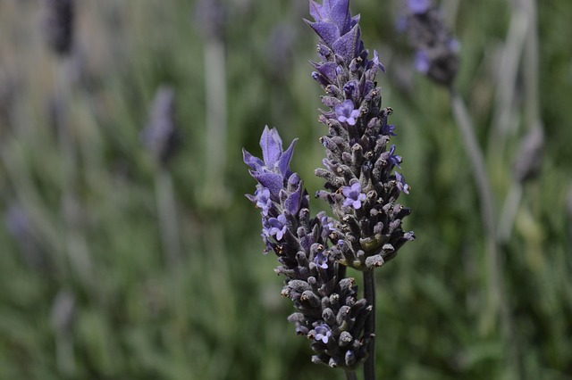

Alapok
💻
Üdvözöllek
az alapokban!
Itt megismerkedhetsz
a fotózás
alapjaival.

Igazából a jó képhez
csak tippeket lehet adni,
de itt van pár darab.
1. Ismerd meg a géped.
Azaz játsz a beállításokkal.
2. Fény a kulcs.
Figyeld meg hogyan változik a fény,
2 ismert ilyen idő van az egyik az arany óra, a másik a kék óra.
3. Foglalkozz a kompozícióval.
A képeid legyenrk elrendezettek.
4. Ne félj kísérletezni.
A témát fotózd le szokatlan szögekből.
5. Gyakorolj rendszeresen.
Minden nap készíts képeket.
6. Utómunka és szerkesztés.
Utómunkával a képet szebbé lehet varázsolni.
7. Tanulj másoktól.
Nézz meg profi fotósok munkáit,
nézz videókat.
Remélem tudtam segíteni.
© 2025 BKMZ A fotózás alapjai | Oktató weboldal